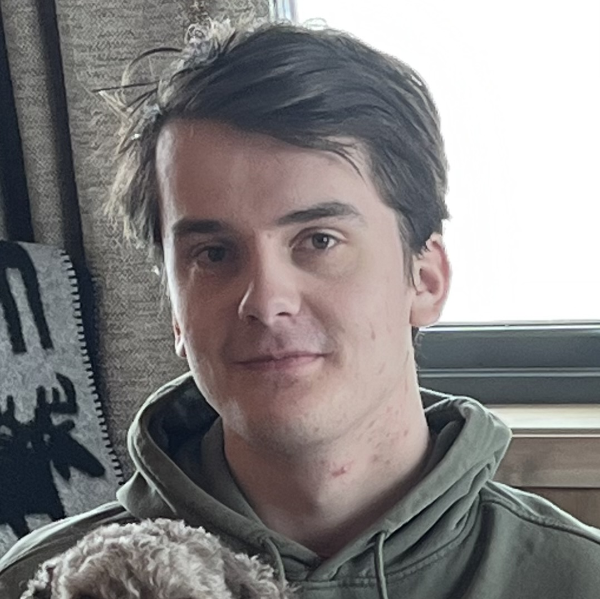

Vektorprogrammet
Større lederrolle med større fokus på tilrettelegging for team arbeid
Planlegging og holding av alt fra sprintplanlegginger til retrospektivmøter
Fortsatt del av utviklingsteamet. Jeg nå har større helhetsbide av hele kodebasen, men programmerer selv mest i backend
Vektorprogrammet
Ledet utvikling av ny backend til vektorprogrammets nettside
Norges Teknisk-Naturvitenskaplige Universitet
Sivilingeniørstudie på NTNU. Planlagt ferdig i 2028.
Tilegnet meg kunnskap om algoritmer, datastrukturer, grunnleggende datamaskinarkitektur, operativsystemer, databaser og agile programvareutvikling.
Svalbard folkehøgskole
Fikk erfaring med dronebygging, nettsidebygging, micropython og arduino.
Værstasjonsprosjekt i samarbeid med Telenor
Fikk også omvisning på KSATs satelittavdeling på Svalbard, og en ukes kurs av en av de ansatte der.
Sandvika videregående skole
Gikk studieforbedrende med fordypning i fysikk, matte og IT
Var med i elevråd som tillitselev fra 2021-2022
TOMRA Production AS
Jobbet med montasje og kalibrering av Tomra sine panteautomater
Lagde og vedlikeholder nettsiden til Birdlife Asker og Bærum
Flere dagers kurs med fokus på førstehjelp i arktiske miljø og skredsikkerhet
Referanser gis på forespørsel